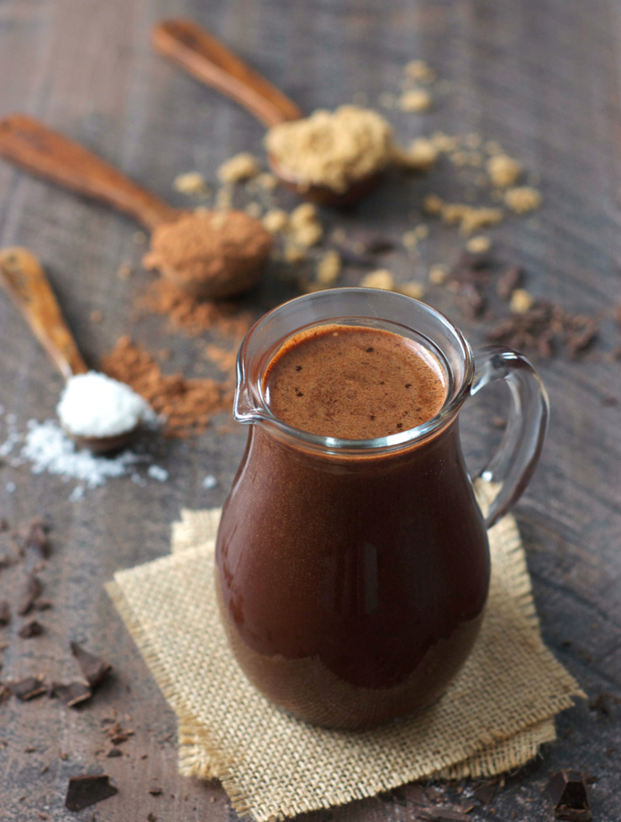

Chocolate Milk

Plant-Based Sugar-Free Chocolate Milk
Super easy and delicious healty alternative to a classic in just 5 minutes! The ingrediants in this recipe are enough for two servings.
Ingredients:
- 2 Dl Hazelnut
- 5 Dl Water
- 3 Tbs Cacao Powder
- 3 Tbs Maple Syrup or 3 Fresh Dates
- Pinch of Salt
- 1/2 Ts Vanilla Powder
Preparation:
- In a blander add 2 Dl Hazelnut and 5 Dl Water and bland until mixed well.
- Strain the mixture through a fine sieve.
- Pour it back in the blender and add the rest of the ingredients. Bland until well combined.
Tip:
If you like cold cocolate milk add a few ice-cubes in a glass when serving!!!
Return to the main page